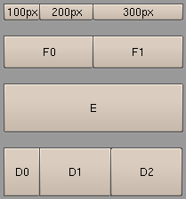

| Home | Trees | Index | Help |
|---|
| Module gui :: Class Rows |
|
object--+ |Container--+ | Rows
Row geometry manager (Container subclass).
The base element of the container is a row of widgets, which is
constructed with Rows.addrow. Each row may be splitted
horizontally in individual way.
# file:ex_Rows.py
import Blender
import gui
interface = gui.Interface()
rows = gui.Rows(interface, 10, 10, 200, 18, 5)
def setwidth(width):
def fun():
rows.set_geometry(None, None, width, None)
Blender.Draw.Redraw()
return fun
a = gui.Button(interface, '100px', tooltip='set width', callback=setwidth(100))
b = gui.Button(interface, '200px', tooltip='set width', callback=setwidth(200))
c = gui.Button(interface, '300px', tooltip='set width', callback=setwidth(300))
d0 = gui.Button(interface, 'D0')
d1 = gui.Button(interface, 'D1')
d2 = gui.Button(interface, 'D2')
e = gui.Button(interface, 'E')
f0 = gui.Button(interface, 'F0')
f1 = gui.Button(interface, 'F1')
# all perc_value
rows.addrow( [ (a,0.2), (b,0.3), (c,0.5)] )
rows.addvspace("half")
# equal width
rows.addrow( [f0, f1], "double" )
rows.addvspace("half")
# single widget
rows.addrow( e, "triple" )
rows.addvspace("half")
# width of one widget is automaticly calculated
rows.addrow( [ (d0,0.2), (d1,0.4), d2 ], "triple" )
interface.register_container( rows )
interface.run()
# eof

| Method Summary | |
|---|---|
Define position and width of container. | |
Add a single row of widget(s). | |
Adds empty row. | |
Draw container and it's content (if container is visible). | |
Returns container's geometry. | |
Set new dimensions and position of container. | |
| Inherited from Container | |
Show/hide container and it's children. | |
Returns visibility of container. | |
| Inherited from object | |
x.__delattr__('name') <==> del x.name | |
x.__getattribute__('name') <==> x.name | |
x.__hash__() <==> hash(x) | |
T.__new__(S, ...) -> a new object with type S, a subtype of T | |
helper for pickle | |
helper for pickle | |
x.__repr__() <==> repr(x) | |
x.__setattr__('name', value) <==> x.name = value | |
x.__str__() <==> str(x) | |
| Method Details |
|---|
__init__(self,
interface,
left,
bottom,
width,
row_height=15,
padx=0)
Define position and width of container.
|
addrow(self, widgets, height='normal')Add a single row of widget(s).
|
addvspace(self, height='normal')Adds empty row.
|
draw(self)Draw container and it's content (if container is visible).
|
get_geometry(self)Returns container's geometry.
|
set_geometry(self, left, bottom, width, height)Set new dimensions and position of container. If certain argument isNone then container parameter remains unchanged:
c = gui.Container(interface, 10, 10, 300, 300)
# set new position
c.set_geometry(x,y, None, None)
# change width
c.set_geometry(None, None, new_width, None)
Function returns four booleans, where True value means that
parameter has changed:
c = gui.Container(interface, 10, 10, 300, 300)
left,bottom,width,height = c.get_geometry()
# change bottom and width
diff = c.set_geometry(left, bottom+5, width-1, height)
print diff # -> (False, True, True, False)
Subclasses must keep behaviour of this method, so it is a
good practice to call Container.set_geometry at the
begining of overriding method:
class Other(Container):
# ...
def set_geometry(self, left, bottom, width, height):
diff = Container.set_geometry(self, left, bottom, width, height)
if diff[3]: # width has changed:
# recalculate width of children
return diff
|
| Home | Trees | Index | Help |
|---|
| Generated by Epydoc 2.1 on Mon Jul 18 19:50:45 2005 | http://epydoc.sf.net |